《最强大脑》第五季第三场是一对一的淘汰赛，挑战项目是立体迷宫。“迷宫”项目在《最强大脑》中并非第一次出现，在第二季晋级赛的第二场中就出现过室外蜂巢迷宫，其难度系数高达10。
关于迷宫的起源，有许多不同的说法，流传最广且为大多数人所接受的一种说法是基于一则古希腊神话故事的克里特迷宫，又名诺索斯迷宫。
在我国古典文学作品中也有关于迷宫的描述。如在《水浒传》“宋江三打祝家庄”的故事中，祝家庄本身就是一个迷宫，但它不叫迷宫而叫“盘陀路”。有诗为证：“好个祝家庄，尽是盘陀路；容易入得来，只是出不去。”宋公明一打祝家庄，先派石秀、杨林去探路。杨林不认路，“只拣大路走了，左来右去，只走了死路”，被活捉了去。幸好石秀机灵，从钟离老人口中套出了盘陀路的秘密：“只看有白杨树便可转弯，不问道路阔狭。否则都是死路，地下还埋着竹签、铁蒺藜。若是走差了，踏着竹签，准定吃捉了。待走那里去？”
比《水浒传》更早的《三国演义》中的“八阵图”也是一个迷宫。第84回的“陆逊营烧七百里，孔明巧布八阵图”中有描写，八阵图是刘备入川时，诸葛亮在长江边的鱼腹浦构筑的一个石头阵。当刘备为报东吴夺荆州、杀关羽之仇而大举兴兵伐吴时，东吴大将陆逊设计火烧连营七百里，大败蜀军并乘胜追击直至蚓关不远处，恰遇石头阵。陆逊引数十骑士上前观看，一刹那，飞沙走石，横沙立土，江声浪涌，杀气冲起。逊急欲回时，无路可出，正惊疑间，忽见一老人立于马前。逊问曰：“长者何人？”老人答曰：“老夫乃诸葛孔明之岳父黄承彦也。昔小婿入川时，于此布下石头阵，名‘八阵图’。反复入门，按循甲休、生、伤、杜、景、死、惊、开。每日每时，变化无端，可比十万精兵。老夫适于山岩之上，见将军从‘死门’而入，料想不识此阵，必为所迷，老夫平生好善，不忍将军险没于此，故特自将汝自‘生门’引出也。”
更早的是《封神演义》第50回“三姑计摆黄河阵”中的“九曲黄河阵”。三仙岛上的云霄、琼霄、碧霄三位娘娘下凡摆九曲黄河阵的起因是她们的哥哥去战姜子牙，被西昆仑的道人陆龙用法术杀死。为报杀兄之仇，三仙姑摆了九曲黄河阵，把玉虚门人、杨戬、金吒、木吒等12弟子俱困于阵中，弄得姜子牙狼狈不堪，亏得元始天尊和老子两位祖师爷亲自出马才破了黄河阵，收了三仙姑。
上述情节撇去其中神怪因素，九曲黄河阵实际上是由600名精兵强将组成的一个活迷宫。陷入其中的人当然无路可寻，凶多吉少。
我国河北省井陉地区的板桥、长岗、南河头、北孤台、于家等村庄至今有在元宵节摆“九曲黄河灯”的习俗，其起源就是九曲黄河阵。据李苑、余音编著的《趣味迷宫畅游》一书，明确指出“九曲黄河阵”就是一种迷宫，而且绘出了它的图案，如图3-1所示。
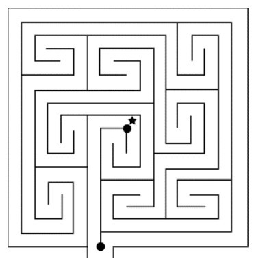
图3-1
由此可见，转九曲黄河阵的人从入口的右侧进入以后，必须按顺序转过9个方阵，到达标有星号的迷宫中央才能出阵。
在我国历史上最著名的迷宫则是圆明园中的万花阵，它是意大利传教士郎世宁在包括画家、建筑师、工程师和园艺师等9个助手的帮助下为清朝皇帝设计建造的。据说每年中秋节，皇帝、皇后会在其中赏月，同时命宫女们提着灯笼入迷宫，谁能到达中央的亭子谁就有赏。可惜这个迷宫连同整个圆明园已在1860年被英法联军所破坏。幸好，它的风姿被宫廷画家用铜版画的形式保存了下来。圆明园中现有的万花阵迷宫是后来复建的，游人可以入内一游。
在有关迷宫的所有数学问题中，大家最关心的恐怕就是如何走迷宫这个问题了。因为有些迷宫要求从入口到达中心，有些迷宫要求从一个口进去，从另一个口出来，所以我们用“走迷宫”这个说法泛指这两种情况。
如果你是在纸上走迷宫，那么最简单的办法就是用铅笔把所有死胡同和回路（如果有的话）都涂黑，这就把你应该走的路径突显出来了。例如图3-2（a）中的迷宫，先把不能通行的死胡同用字母标出，共有A、B、C、D、E、F 6处，把它们用阴影掩盖掉，掩盖的范围到死胡同口为止。如图3-2（b），我们看到分开A、B两个死胡同的结点相当于又一死胡同的底，于是把底也掩盖掉。在图3-2（c）中，G和H虽然不是死胡同，但进入里面转一圈后仍会回到原入口处，这是一条自身封闭的路，对到达目的地不起作用。于是把它们也掩盖掉，这样就得到图3-2（d）。在图3-2（d）中有两对黑点，每一对黑点之间也是一条迂回路线，此类路线仍须掩盖掉，这样便得出图3-2（e），这样就走出了迷宫。
如果你面对的是一个现实中的迷宫，当然无法看到它的整个布局，就不可能用上述方法决定你应该行走的路线。这时候右手法则（或者左手法则）就可以帮助你顺利地走出迷宫了。所谓右手法则（或者左手法则）就是在你进入迷宫以后，始终用右手（或左手）摸着墙前进，这就能确保你走到迷宫中心，并走出迷宫（到达另一个出口或者回到入口处）。图3-3就是用这个方法走汉普顿迷宫的示意图，用右手法则或左手法则所走的路线是完全一样的，但行进方向正好相反。
上述方法一般来说是有效的，但它有两个例外：
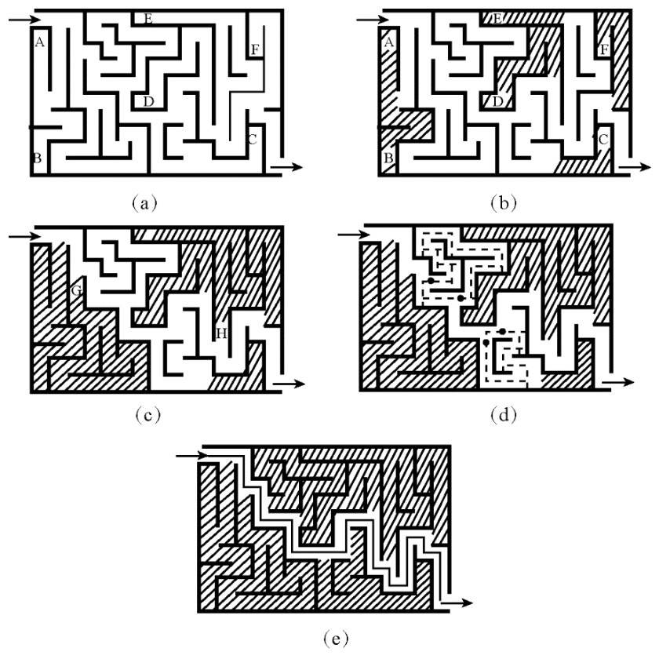
图3-2
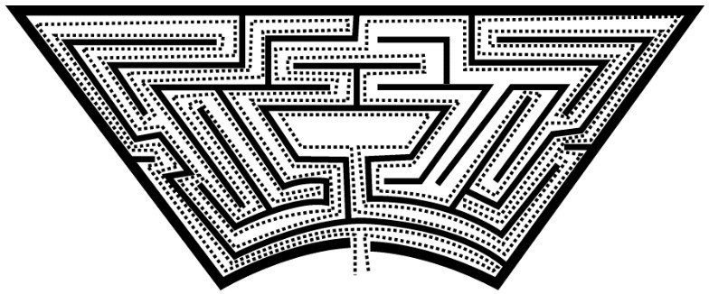
图3-3
①该迷宫有两个入口，而且有一条不通过终点的路线连接它们；
②迷宫的路中带有环绕终点的圈。
法国数学家M·特马克设计了一种解任意迷宫的普适性方法，程序如下。
①在你走过的路的右侧画一条线；
②当你走到一个新交叉点时，你可以任意选择一条你想走的路；
③如果你在新的路上又回到旧的交叉点或死胡同，那便往回走；
④如果你在旧路上走到一个旧的交叉点，那就任取一条新路（如果有的话），否则就取一条旧路；
⑤决不进入两侧都做了记号的路。
特马克法可以归纳为如下口诀：
新路新结点，
任选支路行；
走进死胡同，
掉头毋悻悻；
新路旧结点，
回头要清醒；
旧路旧结点，
新路最高兴；
若无新路选，
旧路也可行；
已走两遍路，
千万莫再行。
以上方法虽然通用，但可能要花费不少时间。
从数学上来说，各种各样的迷宫路线无非就是一个图，也就是由若干结点以及其中某些结点之间的连线即所谓的边所组成的。若以静态及定位方式研究迷宫，即不考虑各结点的具体位置而只考虑其相对位置，也不考虑各边的具体长度和形状的时候，我们可以把迷宫的拓扑结构画出来，这对于研究迷宫中的数学问题是十分必要的。
下面我们通过一个例子，来说明迷宫拓扑结构的画法。图3-4是英国的一座建于1690年的迷宫，名为“汉普顿迷宫”。我们把迷宫图中的每一个死胡同的底（绝点）及每一个分歧点都标上字母，那么图3-4的迷宫图可改画成图3-5的拓扑图。
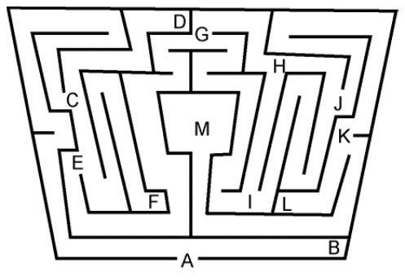
图3-4
在一个图中，若道路成环（如图3-5中的G-I-J-H、G-I-H等），则从环上的某一点出发，循环行走，定可返回原地。若道路呈“枝”状，则来回走两遍也是可返回原地的。所以，如果把枝状路画成“重路”，环状路只画外圈，那么图3-5就成了图3-6的样子。在图3-6中，与每个顶点相关联的路都是偶数，满足一笔画的规则，定能满足从哪一点出发便回到哪一点结束，即可走出迷宫。
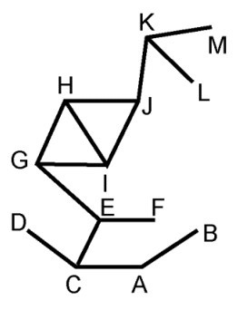
图3-5
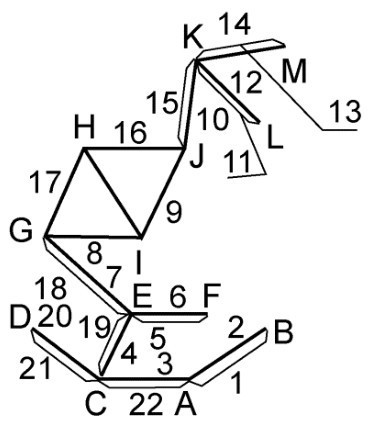
图3-6
对于图3-6，若从A出发，经路线1,2,3,…,21,22回到A，这就走出了迷宫，而且是紧贴右墙（即右手法则）行走的路线图。
在这个例子中，我们不仅画出了迷宫的拓扑结构，而且找到了走出迷宫的路线。对于复杂的拓扑结构自然要找更好的办法，甚至用计算机来求解。
计算机解迷宫虽然没有实用意义，但有较高的学术价值。首先，要解决的问题是把由拓扑结构形成的迷宫转化为数字，毕竟计算机只认“数”而不认“图”。这里运用的主要手段就是邻接矩阵。我们把图中点的集合记成V={v1,v2,…,vn}，线段组成的集合记成E={e1,e2,…,eε}，这便构成如下矩阵。
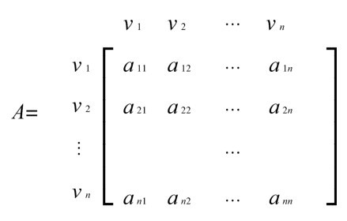
其中第i行第j列处的元素
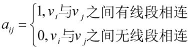
对于图3-7中的四边形G，它的邻接矩阵为
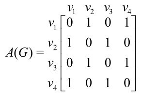
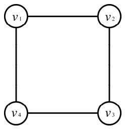
图3-7
对于有向图，也有邻接矩阵。例如在图3-8中，每条边皆有箭头指示方向，这种图称为有向图。
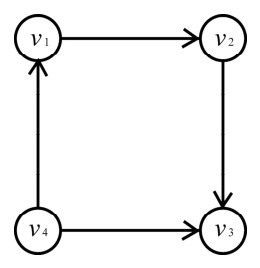
图3-8
有向图G′的邻接矩阵为
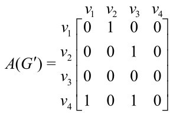
一般地，对于有向图G′，其邻接矩阵定义为
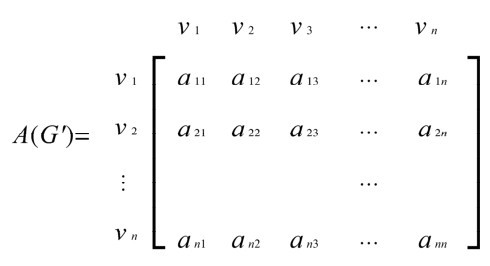
其中
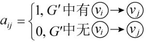
对于每个简单图或有向图，都可以轻易地写出它的邻接矩阵。具体到迷宫来说，如果已到了出口，则可以-1代替。这样迷宫拓扑结构中所含的一切信息都蕴含在了数字化的邻接矩阵当中，数学的量化功能在图的邻接矩阵上体现得淋漓尽致。
有了数据，就应寻找一种有效的算法。1970年，在斯坦福大学做访问学者的霍普克洛夫特和该校的研究生罗伯特·陶尔杨合作，提出了一种适于解决平面图的新算法，即深度优先搜索算法。
由于迷宫也是图，因此适合采用深度优先搜索算法及回溯来求解。实际上这同人走迷宫是非常相似的：先任意选择一条路，只要能走下去就一直往前走；走不下去了才往回返，选一条新的路走。在通路的每一点上，按右、上、左、下的顺序搜索下一个落脚点，有路则进，无路则退，从上一点的下一个方向继续搜索。例如，从起点开始一路向右到达a点，再向右搜索仍有路则进至b点，若在b点向右、上、下都没有路则退回a点，重新向上、下搜索，哪里有路往哪走；若无路，则继续后退，如此等等。
解决了这两个基本问题，再加上一些技术手段，就可以顺利上机解迷宫了。本书只说个概要，有兴趣的读者可以参阅专业书籍。
当代杰出数学家、信息论的开山祖师克劳特·香农曾制造了一台能够自己学习的机器，称为“迷宫之鼠”。这是一个铝制的方盒子，用隔板分成了一个有25个方格的迷宫。这些方格分为5列，每列有5格。在一个格子里放上做成老鼠样子的永久磁铁，在另一个最难到达的格子里放上钢制的“奶油”。盒子背后设有控制装置，当机器一开动，“老鼠”就被迷宫下面的电磁铁控制，而电磁铁的运动由继电器电路控制，它是整个装置的核心部件。继电器电路共由110个继电器构成，起到控制、计算和存储的作用。迷宫的每个格子里都放着继电器，当老鼠碰到隔板时，隔板上的继电器便处于接通状态。它们可记存每一个格子内的4个运动方向。
为什么说这台机器能够自己学习呢？原来是这样的。在机器第一次开动时，老鼠会到处乱钻，沿着复杂的道路找到“奶油”，假设这时它所耗的时间是60秒。找到“奶油”以后，暂时把机器关闭一下，然后把老鼠放在原来的地方，再开动机器，这时老鼠会沿着最短的道路行走，不会钻到那些死胡同里去，在较短的时间（少于60秒）内就找到了“奶油”。用磁铁做的老鼠就像“活”的一样，它能记住路线，产生条件反射，并从已有的错误中吸取教训。
机器老鼠为什么有这种出色的学习本领呢？据说是因为香农为它设定了以下4个条件。
①老鼠没有到达的格子都亮绿光。
②老鼠移动时第一次到达的地方都亮黄光。
③第二次到达的地方亮红光。
④亮起红光的地方老鼠再也不会钻进去。
在这4个条件下，可以证明老鼠在第一次行动时一定会找到“奶油”，而在第二次行动时就会沿着最短的途径找到它。于是我们可以这样说，老鼠的行动已经被程序所控制。
1952年，在第5届控制论会议上香农做了一个报告，向与会代表演示了这台机器，顿时引起了广泛的兴趣和热烈的讨论。后来，香农在一篇综述性的论文《计算机和自动机》中总结说，这台机器在非常原始的水平上具备了下列能力：①通过试错解决问题；②重复同一过程时牢记教训，不再犯错；③对特定解增加新的信息；④原有解不再有用时便把它忘掉。
在香农研究学习型机器的同时，普林斯顿大学的博士研究生明斯基也在研究机器是否可以思考，是否可以具有学习能力的问题。1951年，他建造了一台学习机，名为Snarc。Snarc是世界上第一个神经网络模拟器，其目的也是学习如何穿越迷宫！Snarc虽然比较粗糙且不够灵活，但毕竟是人工智能研究中最早的尝试之一。1956年，明斯基、香农、麦卡锡、罗杰斯特等人一起发起了著名的达特茅斯会议。正是在这个会议上，才正式提出了“人工智能”这一名词，并宣告了这一崭新学科的诞生。由此可见，迷宫在催生人工智能这一研究课题方面功不可没。
讲了这么一大堆的数学难题，这一节大家来轻松一下吧。下面是一个单人游戏，相当有趣，可以随时随地玩一把。
如图3-9所示，52张扑克牌按6行放好，虚线位置不放牌（当然，发牌是随机的，此处为一个示例）。然后把4张K取走，这样在6×9的区域中共出现6个空位。下面开始调整扑克牌的位置，每次一张，最终目标是使整副牌重新理顺：红桃、黑桃、梅花、方块各自聚集在一起，并且从1点的“A”到王后“Q”按从小到大的次序排好（至于红桃、黑桃、梅花、方块这4者的次序是可以任意排的）。调整时应遵守以下规则：每次把一张牌移到任意一个空位上去，只要该空位左侧（或右侧）的牌同它属于一个花色，而且该牌的点数大于空位前牌的点数，且小于空位后牌的点数。例如，一张方块2可以移到空位前有一张方块A或空位后有一张方块3的空位上去。如果“Q”后有空位，那么不管什么花色的“A”都可以移进去，即使空位后的“2”同“A”的花色不同也没关系。
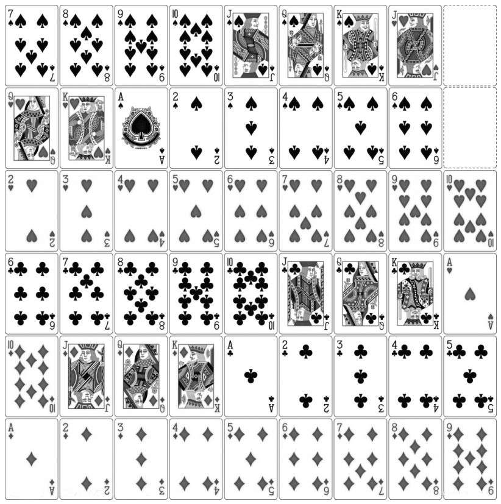
图3-9
在进行游戏时，你可以认为这副牌是首尾相接的。但在最后的布局中，第一张牌必须是“A”，最后一张牌必须是“Q”。
由于洗牌和移牌的随机性，这个扑克迷宫其实就是一个“动态迷宫”，其通路不但与初始布局有关，也同你每一步的走法有关，它时刻都在变化。所以，这个迷宫游戏虽玩起来方便有趣，但对人的智力考验更加苛刻。
立体迷宫的首创者大概是英国著名的数学家和作家、《艾丽丝梦游仙境》的作者刘易斯·卡罗尔，这位多才多艺又爱思考的数学家设计的一个十分复杂的立体迷宫如图3-10所示。大家仔细看一下就会发现，这个迷宫虽然没有很强的立体感，但其中许多路径不是平面相交而是立体相交的，这开创了立体迷宫的先河。这个迷宫外围有7个入口，同中央的菱形区域相连的路径有8条，但实际上只有一个入口、一条路径能让你到达迷宫中心。你能找出这个入口和这条路径吗？
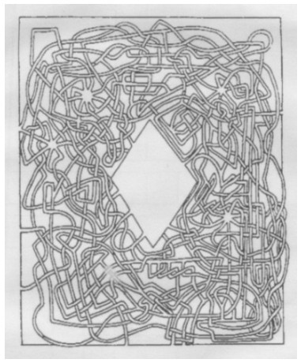
图3-10
当代数学家、IBM公司的研究员庇考夫设计过一个立体数学迷宫。在这个立方体的栅格上有带数字的小球，要求从标有21的这个球出发，在其中找出一条路径，满足从3这个球出来，且经过的小球上的数字之和为202 （如图3-11所示）。
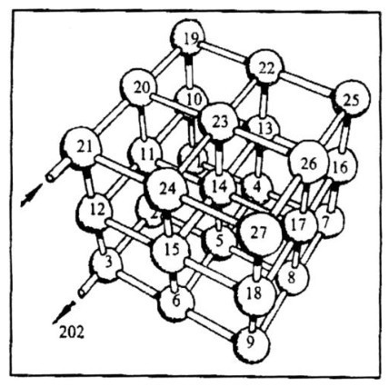
图3-11
马丁·加德纳设计了一个正立方体迷宫，如图3-12所示。这个迷宫由4×4×4（=64）个“小立方体”组成，分A、B、C、D四层。图中粗黑线表示有“墙”，相邻小方块被隔断，不能通行；涂黑部分表示小方块有“地板”，不能从下面的小方块进入到上面的小方块中；最顶上的A这一层当然是有“天花板”的，图上没有表示出来。现在请你在这个迷宫中找出一条通路来，满足从D的一角进去，从与它相对的一角A出来。
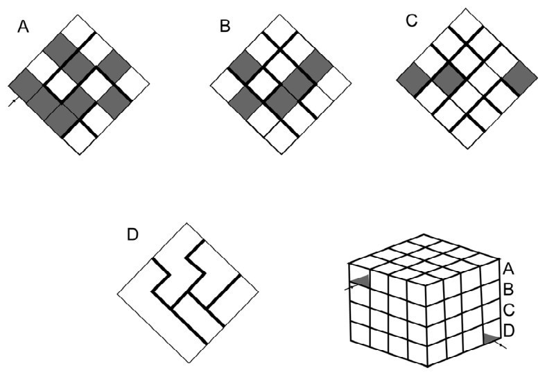
图3-12
以上这3个立体迷宫你能解出来吗？答案见附录二。最后要说明的是：立体迷宫不存在统一解法。